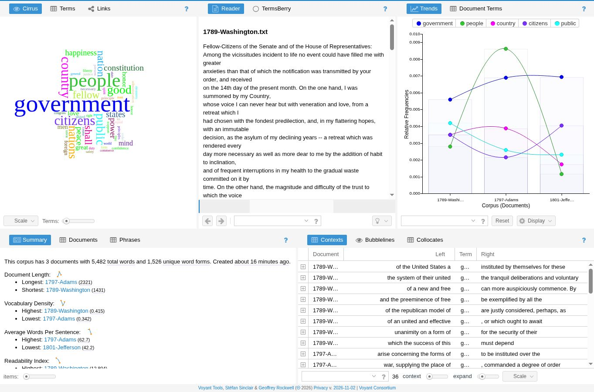
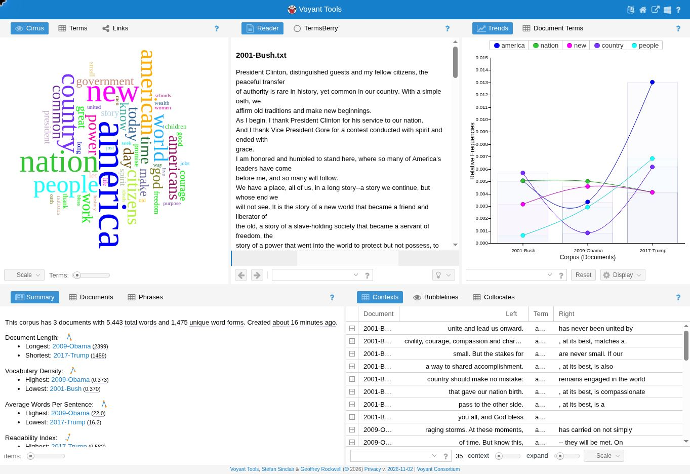
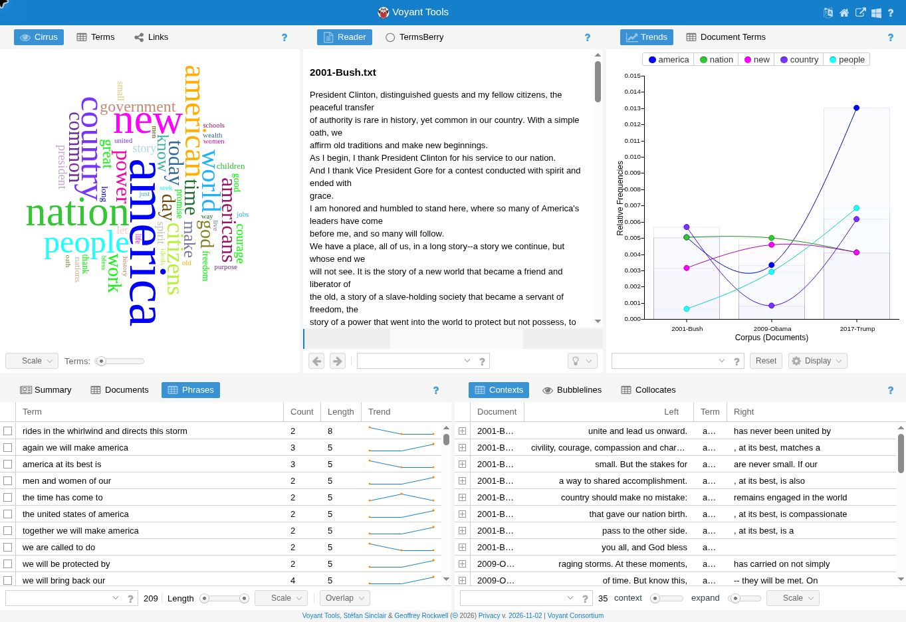

Mark Chamberlain | DIGIT 100 | Work in progress
I am comparing the first speeches given by three early presidents and three modern presidents when they took office. I want to see which words and phrases they repeated and how their speeches are different.
The texts come from our class text collection. I saved them in early and modern folders in my text lab on GitHub, outside the docs folder.

Government stands out the most in the early speeches. It appears 36 times. People appears 26 times, while country and citizens each appear 17 times. These words suggest that the presidents talked a lot about government and the people it serves. I still need to look at the full sentences to understand more.

America stands out in the modern speeches. It appears 35 times, nation appears 26 times, and new appears 22 times. Country appears 20 times and people appears 18 times. These words make me think about America and its future. Both groups talk about the country and its people.
The two groups have almost the same number of words, which helps with the comparison. This is only a small sample, so I cannot say the results apply to every president.
An n-gram is a group of words used together. A 3-gram has three words. This table shows how often some three-word phrases appear in each group. These counts were calculated from the text files separately from Voyant. Capital letters are treated the same as lowercase letters, and common words are included.
| Three-word phrase | Early group | Modern group |
|---|---|---|
| of the people | 8 | 0 |
| my fellow citizens | 4 | 2 |
| and we will | 0 | 8 |
| we will not | 0 | 6 |
| men and women | 0 | 6 |
| together we will | 0 | 5 |
The early speeches use of the people more often. The modern speeches use and we will and we will not more often. These phrases seem to introduce plans or promises. My next step is to read the sentences around them.

Voyant shows we will bring back our four times and america at its best is three times. Repeating a phrase can help a president make a point. I want to check which president used each phrase.
Next, I plan to use AntConc to compare phrases with two, three, and four words. I will also read the words around each phrase to understand how it is used. I have not finished the AntConc part yet. In Voyant, I want to change the list of common words it leaves out and see what changes.
Open early speeches in Voyant | Open modern speeches in Voyant